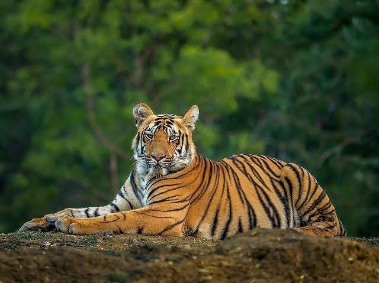
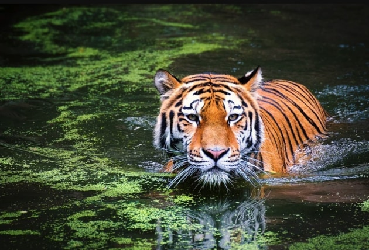
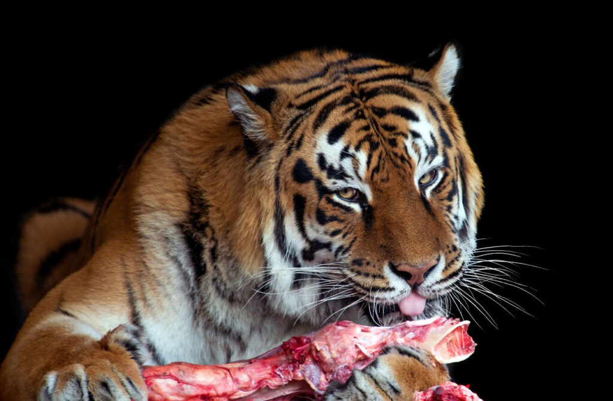

A large wild cat found mainly in South Asia

The Bengal tiger also known as "Panthera tigris tigris" is a large, endangered subspecies of tiger native to the Indian subcontinent, representing nearly half of all remaining wild tigers.
Renowned for their unique and distinct orange coats with black stripes, they are apex predators and skilled swimmers.
They are solitary, territorial animals who prefers to live in forests, mangroves, and grasslands.
They mainly live in India, but are also found in Bangladesh, Bhutan, Nepal, and Southwestern China.
Bengal tigers primarily thrive in diverse, dense habitats, including tropical moist evergreen forests, deciduous forests, mangroves, and alluvial grasslands which have high prey density and access to water.


Bengal tigers are obligate carnivores and prefer hunting large ungulates and medium-sized preys. They also occasionally hunt and kill predators like leopard, crocodile and wild boar. A hungry tiger can consume upto 60 pounds of meat in one night.
HypercarnivoreBengal tigers are solitary, territorial apex predators, mostly active at dawn and dusk.
Unlike many cats, Bengal tigers are strong swimmers and often enter water to hunt, cool down, or cross rivers.
Bengal tigers are endangered from severe threats but primarily from illegal poaching, habitat loss and climate change.
| Type | Mammal |
|---|---|
| Diet | Carnivore |
| Region | South Asia |
Bengal tigers are typically measured around 9-10 feet in length.
No two Bengal tigers have the same stripes, acting like human fingerprints, with the pattern present on their skin, not just fur.
I found Bootstrap helpful while making this webpage. It made the work faster because many styles were already given. I did not have to write a lot of CSS. I could just use classes like container, row, and col to arrange my content. This made it easier to place images and text side by side. I also liked how the spacing and alignment worked automatically using Bootstrap classes.
Another thing I liked was design consistency. The buttons, cards, and tables already looked clean without doing much extra work. It helped my page look organized. Bootstrap also made the page responsive, so it adjusts on different screen sizes without much effort.
However, there were some things I did not like. At first, it was confusing to remember so many class names. I had to check documentation again and again. Also, I felt that the design options are a bit limited if I want something very unique. I think many Bootstrap websites can look similar if we only use default styles.
Compared to writing my own CSS, Bootstrap is easier and quicker for beginners, but writing your own CSS gives more control and flexibility in design. Overall, I think Bootstrap is very useful for creating simple and responsive webpages quickly, but it has some limitations when it comes to custom design.
Source: Wikipedia - Bengal Tiger